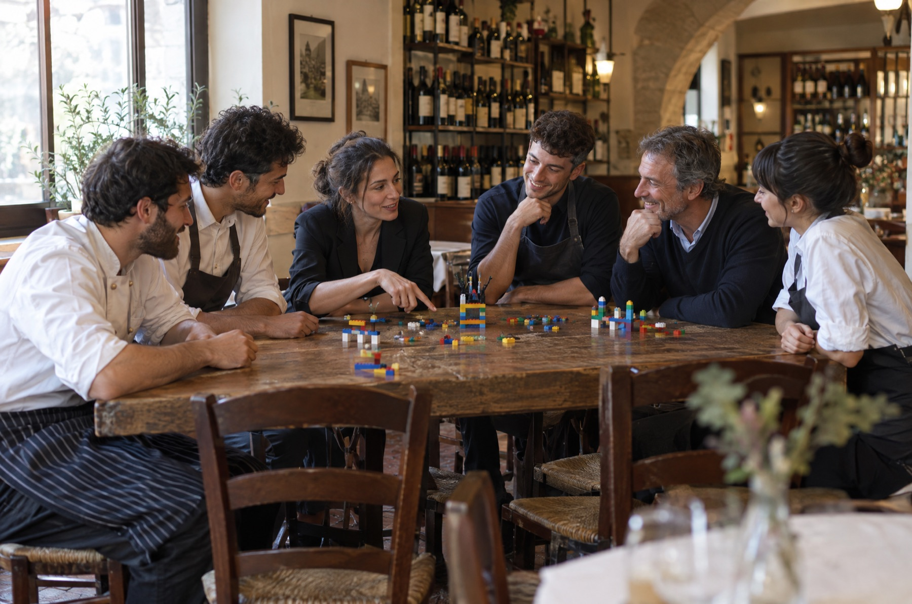
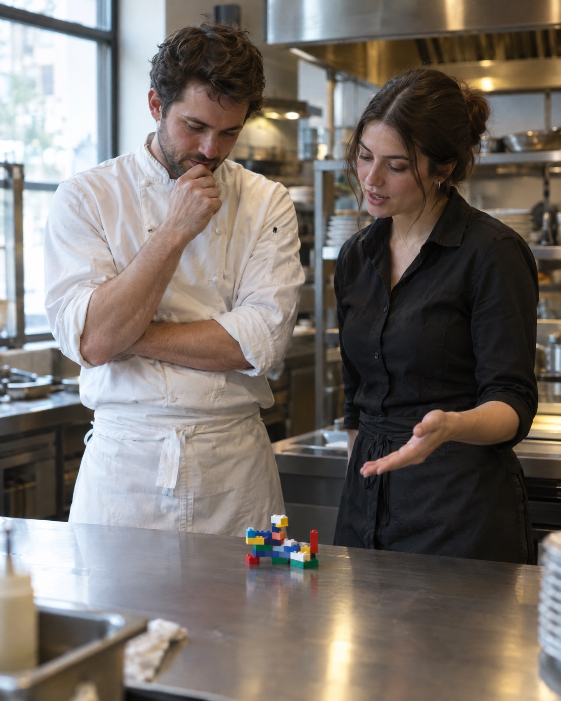

Il Laboratorio strategico SB: il primo laboratorio in Italia pensato per la ristorazione con il metodo LEGO® SERIOUS PLAY®.
Richiedi informazioni
Nato nel Gruppo LEGO a fine anni Novanta e aperto dal 2010 a facilitatori formati, il metodo LEGO SERIOUS PLAY guida aziende di tutto il mondo nelle scelte di strategia, cambiamento e lavoro di squadra.
Non è un gioco e non è uno svago. È una sessione operativa con un obiettivo chiaro. Non serve essere creativi né saper costruire: i materiali LEGO SERIOUS PLAY servono per rendere visibili i pensieri e prendere decisioni reali.

Il facilitatore pone un quesito preciso legato al tuo locale, al servizio o al lavoro quotidiano.
Ognuno usa i mattoncini per costruire la propria risposta in pochi minuti. Si ragiona attraverso le mani.
Tutti raccontano il proprio modello. Non parlano solo i soliti due o tre, ma partecipa tutta la squadra.
Dalle singole visioni si passa a una costruzione comune, che fissa regole e scelte condivise dal gruppo.
Mettiamo d'accordo due reparti che spesso vedono il servizio in modo diverso, creando un punto di vista comune.
Costruiamo o rivediamo l'identità del tuo locale prima di una nuova apertura o di un rilancio.
Scriviamo le regole operative insieme alla tua squadra, così le persone le sentono proprie e le rispettano.
Portiamo alla luce ciò che nessuno dice a voce su turni, comunicazione interna e carichi di lavoro.
Aiutiamo i nuovi arrivati a capire il progetto e a sentirsi parte del gruppo fin dall'inizio.
Per i gruppi: portiamo i responsabili di diverse strutture a lavorare nella stessa direzione.
I problemi di un locale si risolvono meglio quando li vedi sul tavolo.
Nelle riunioni classiche parlano sempre gli stessi. Qui ognuno costruisce e spiega il proprio modello: la partecipazione è totale.
Si discute del modello sul tavolo, non della persona. Questo permette di affrontare temi delicati senza alzare muri o creare tensioni.
Costruire con i mattoncini aiuta a esprimere concetti e soluzioni che a parole spesso restano bloccati.
Facciamo il Laboratorio strategico SB in presenza, direttamente nel tuo locale o in una sala dedicata. Partecipa la tua squadra: titolare, cucina, sala, responsabili. Decidiamo insieme durata e programma in base al tuo obiettivo. Alla fine ricevi un documento con i risultati scritti e le foto dei modelli.
Richiedi informazioniRaccontaci su cosa vuoi lavorare. Costruiremo il programma adatto al tuo ristorante, bar o hotel.
Richiedi informazioniIl Laboratorio strategico SB è un servizio di consulenza operativa per ristoranti, bar e hotel di SB Food Consulting, attivo a Roma e in tutta Italia. È il primo laboratorio in Italia per la ristorazione basato sul metodo LEGO SERIOUS PLAY. Guida titolari, chef, manager e squadre a risolvere problemi operativi, unire sala e cucina, definire standard di servizio e concept attraverso la costruzione di modelli condivisi con i mattoncini.
LEGO, SERIOUS PLAY, the Minifigure and the Brick and Knob configurations are trademarks of the LEGO Group, which does not sponsor, authorize or endorse this website. © 2026 The LEGO Group.